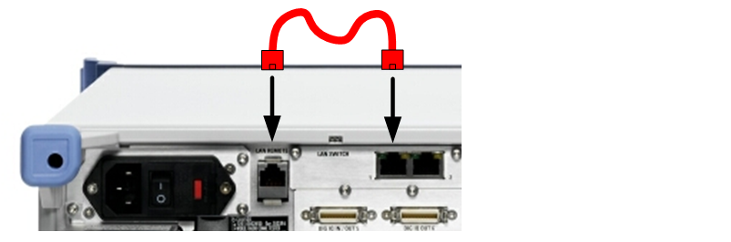

Option R&S CMW-B661A, "Ethernet Switch H661A", is delivered with a separate Ethernet cable (patch cable).
Connect this patch cable if you want to execute the selftest "Unit Test > IP Access Test External". For other applications, the patch cable is only required if no data application unit (DAU) is installed.
The patch cable can be required when using the R&S CMW as system component in R&S CMW-RRM or R&S TS8980 test systems. For more information, refer to the documentation provided with these products.
Plug the cable into connector 1 of the LAN SWITCH and into the LAN REMOTE connector as shown in the following figure.

The patch cable is only functional if the "Lan Remote" network adapter is integrated into the internal IPv4 subnet of the instrument.
For configuration of a compatible "Lan Remote" IP address, see "IP Subnet Configuration".